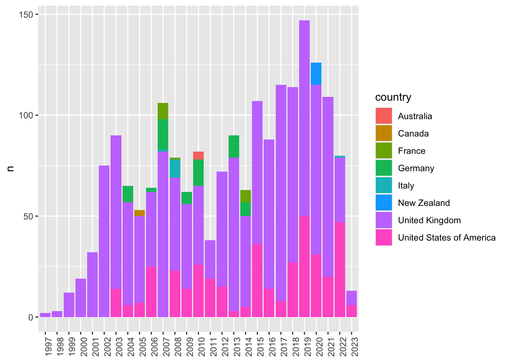
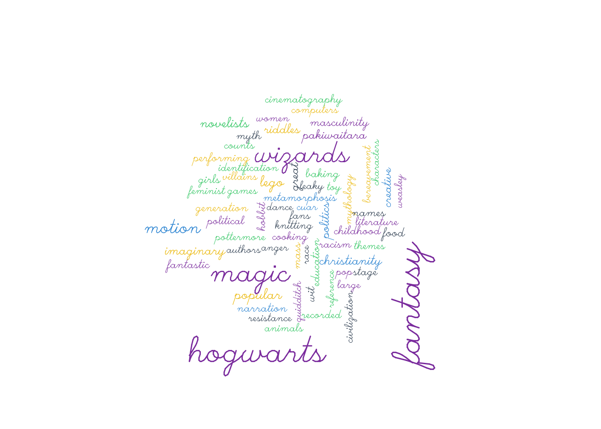

Тема 5 Функциональное программирование
5.1 Зачем писать функции?
Программировать на R – прежде всего значит писать функции. Несмотря на десятки тысяч функций, обитающих в тысячах пакетов, рано или поздно вам понадобится своя функция, которая будет подходить для решения именно ваших задач.
Функция и код – не одно и то же. Чтобы стать функцией, кусок кода должен, как минимум, получить имя. Зачем давать имя коду, который и так работает?
Вот три причины, которые приводит Хадли Уикхем:
- у функции есть выразительное имя, которое облегчает понимание кода;
- при изменении требований необходимо обновлять код только в одном месте, а не во многих;
- меньше вероятность случайных ошибок при копировании (например, обновление имени переменной в одном месте, но не в другом)
Writing good functions is a lifetime journey.
— Hadley Wickham
Чтобы определить функцию, необходимо дать ей имя. Машине все равно, как вы назовете функцию, но тем, кто будет читать код, не все равно. Имена должны быть информативы (поэтому функция f() – плохая идея). Также не стоит переписывать уже существующие в R имена!
Далее следует определить формальные аргументы и, при желании, значения по умолчанию. Тело функции пишется в фигурных скобках. В конце кода функции располагается команда return(); если ее нет, то функция возвращает последнее вычисленное значение (см. здесь о том, когда что предпочесть).
Написание функций – навык, который можно бесконечно совершенствовать. Начать проще всего с обычного кода. Убедившись, что он работает как надо, вы можете упаковать его в функцию.
Например, нам нужна функция, которая ищет совпадения в двух векторах и возвращает совпавшие элементы. Сначала решим задачу для двух векторов.
x <- c("гнев", "богиня", "воспой")
y <- c("в", "мысли", "ему", "то", "вложила", "богиня", "державная", "гера")
idx <- which(x %in% y) # 2
x[idx]## [1] "богиня"Теперь заменяем фактические переменные на формальные.
И применяем к новым данным.
x <- c("лишь", "явилась", "заря", "розоперстая", "вестница", "утра")
y <- c("вестница", "утра", "заря", "на", "великий", "олимп", "восходила")
common_words(x, y)## [1] "заря" "вестница" "утра"Ура, все работает! Запомните простое правило: если вы трижды скопировали код, пора писать функцию!
Загрузите библиотеку swirl, выберите курс R Programming E и пройдите из него урок 9 Functions.
Для просмотра исходного кода любой функции необходимо…
5.2 Область видимости переменных
Напишем функцию, которая будет центрировать данные, то есть вычитать среднее из каждого значения (забудем на время, что это уже делает базовая scale()):
## [1] -5 0 5Внутри нашей функции есть переменная n, которую не видно в глобальном окружении. Это локальная переменная. Область ее видимости – тело функции. Когда функция возвращает управление, переменная исчезает. Обратное неверно: глобальные переменные доступны в теле функции.
5.3 Аргументы функции
Функция может принимать произвольное число аргументов. Доработаем наш код:
center <- function(x, na.rm = F){
if(na.rm) { x <- x[!is.na(x)]} # добавим условие
x - mean(x) # на этот раз без return()
}
x <- c(5, 10, NA)
center(x)## [1] NA NA NAЧто произошло? Почему следующий код выдает другой результат?
## [1] -2.5 2.5Вычисления в R ленивы, то есть они откладываются до тех пор, пока не понадобится результат. Если вы зададите аргумент, который не нужен в теле функции, ошибки не будет.
center <- function(x, na.rm = F, what_is_your_name){
if(na.rm) { x <- x[!is.na(x)]} # добавим условие
x - mean(x) # на этот раз без return()
}
center(x, na.rm = T)## [1] -2.5 2.5## [1] -2.5 2.5Часто имеет смысл добавить условие остановки или сообщение, которое будет распечатано в консоль при выполнении.
5.4 Векторизируй это
Теперь самое главное: если мы хотим применить функцию к каждому элементу вектора, то в большинстве случаев достаточно просто вызвать функцию. Это называется векторизация.
Это относится не только ко многим встроенным функциям R, но и к даже к операторам. x + 4 в действительности представляет собой +(x, 4):
## [1] 5.20 6.51 7.80Ключевую роль здесь играет переработка данных, о которой мы уже говорили: короткий вектор повторяется до тех пор, пока его длина не сравняется с длиной более длинного вектора. Как-то так:
\[\left( \begin{array}{c} 1.2 \\ 2.51 \\ 3.8 \end{array} \right) + \left( \begin{array}{c} 4 \\ 4 \\ 4 \end{array} \right)\]
Понимание того, как действуют векторизованные вычисления, очень важно для написания корректного кода. Посмотрите на пример ниже: почему функция is_article() возвращает два значения, хотя на входе только одно?
## [1] FALSE TRUEПоскольку векторы сравниваются поэлементно, то функция ниже вернет разный результат в зависимости от того, в каком порядке заданы элементы:
## [1] FALSE TRUE## [1] FALSE FALSEПодумайте, вектор какого типа и какой длины вернет код ниже.
is_article <- function(x) {
articles <- c("a", "the")
x %in% articles
}
x <- c(rep("the", 5), rep("if", 5))
is_article(x)Напишите функцию awesome_plot, которая будет принимать в качестве аргументов два вектора, трансформировать их в тиббл и строить диаграмму рассеяния при помощи ggplot(). Задайте цвет и прозрачность точек, а в подзаголовке выведите коеффицент корреляции.
5.5 Векторизованные конструкции
5.5.1 Циклы
Еще один способ повторить действия в R, при этом не копируя один и тот же код много раз, – это циклы.
Один из главных принципов программирования на R гласит, что следует обходиться без циклов, а если это невозможно, то циклы должны быть простыми.
— Нормат Мэтлофф
Существует два основных цикла: цикл for и цикл while. На практике чаще используется цикл for, потому что цикл while легко отправить в бесконечность.
5.5.1.1 Цикл for
Цикл ниже считает количество букв для каждого слова в векторе. Вы можете заметить, что в циклах часто используется буква i. Но никакой особой магии в ней нет, имя переменной можно изменить.
y <- c("в", "мысли", "ему", "то", "вложила", "богиня", "державная", "гера")
result <- c()
for(i in y) {
n <- nchar(i)
result <- c(result, n)
}
result## [1] 1 5 3 2 7 6 9 4В данном случае мы указали, что надо совершить какую-то операцию над каждым элементом вектора; но по сути это избыточно, потому что nchar() тоже векторизована.
## [1] 1 5 3 2 7 6 9 4Поэтому чаще цикл for применяют к другим структурам данных. Например, к спискам и датафреймам. Загрузим и немного изменим датасет о гапаксах у Платона. Изменения нужны, так как цикл работает для данных только одного типа, в то время как в нашей таблице столбец dialogue содержит символьные строки, а group – фактор. Обратите внимание, что оператор pipe и функции из dplyr работают и с обычными датафреймами:
rownames(hapax_plato) <- hapax_plato$dialogue
hapax_plato_num <- hapax_plato %>% select(-group, -dialogue) #
str(hapax_plato_num)## 'data.frame': 26 obs. of 3 variables:
## $ words: chr "8745" "8311" "17944" "4950" ...
## $ hapax: chr "36" "31" "122" "104" ...
## $ ratio: chr "0.004" "0.004" "0.007" "0.021" ...Сейчас все данные в нашей таблице имеют тип chr, то есть строка, и при помощи цикла мы можем их трансформировать.
for (i in seq_along(hapax_plato_num)) { # seq_along ≈ 1:length(x)
hapax_plato_num[,i] <- as.numeric(hapax_plato_num[,i])
}
str(hapax_plato_num) # убеждаемся, что все получилось## 'data.frame': 26 obs. of 3 variables:
## $ words: num 8745 8311 17944 4950 4169 ...
## $ hapax: num 36 31 122 104 19 87 15 125 12 32 ...
## $ ratio: num 0.004 0.004 0.007 0.021 0.005 0.007 0.003 0.005 0.003 0.008 ...При помощи циклов можно не только трансформировать данные, но и создавать новые. Чтобы посчитать среднее для столбца, цикл писать не надо: для этого есть функция colSums() (или, для других задач, rowSums()). А вот посчитать медиану таким образом не получится, тут может пригодиться цикл.
library(tictoc)
tic()
medians <- c()
for (i in seq_along(hapax_plato_num)) {
m <- median(hapax_plato_num[,i])
medians <- c(medians, m)
}
toc()## 0.002 sec elapsed## [1] 15589.500 94.500 0.007Мы сохранили результат, инициировав пустой вектор, к которому затем привязали данные по каждому столбцу. Это не всегда хорошая идея, поскольку для больших данных может сильно замедлить цикл16. Еще один способ – сразу инициировать вектор нужной длины. Сравнить скорость можно при помощи функций из пакета tictoc.
tic()
medians <- vector("double", ncol(hapax_plato_num))
for (i in seq_along(hapax_plato_num)) {
medians[i] <- median(hapax_plato_num[,i])
}
toc()## 0.002 sec elapsedВторой способ чуть быстрее, и для больших данных это может быть существенно.
5.5.1.2 Цикл while
Как уже говорилось, с циклами while стоит быть осторожнее. Посмотрите, например, на этот цикл, который перебирает слова, пока не найдет слово длиной 6 букв. Что могло пойти не так?
## [1] "богиня"## 0.003 sec elapsedТо же самое можно сделать без цикла, причем быстрее!
## [1] "богиня"## 0.001 sec elapsedВ целом, ничего незаконного в циклах нет, но
- множество вложенных друг в друга циклов сложно воспринимать;
- порой они могут замедлить выполнение кода.
И в базовом R, и в диалекте tidyverse для этого есть несколько решений, о которых скажем чуть ниже. Сначала рассмотрим еще одну векторизованную конструкцию – условие.
5.5.2 Условия
Иногда необходимо ограничить выполнение функции неким условием. Короткие условия можно писать в одну строку без фигурных скобок.
## [1] "многабукв"Более сложные и множественные условия требуют фигурных скобок. Можно сравнить это с условным периодом: протасис (всегда либо TRUE, либо FALSE) в круглых скобках, аподосис в фигурных.
if (sum(nchar(y)) > 10) {
print("много букв")
} else if (sum(nchar(y)) < 5) {
print("мало букв")
} else {
print("норм букв")
}## [1] "много букв"Также в R можно использовать специальную функцию:
## [1] "много букв"Прописывая условие, не забывайте, что применение булева оператора к вектору возвращает логический вектор:
## [1] FALSE FALSE FALSE FALSE TRUE TRUE TRUE TRUE TRUE TRUEТакое условие вернет ошибку.
## Error in if (x >= 5) print("все сломалось"): the condition has length > 1Можно скорректировать код так:
## [1] "все сработало"По той же причине внутри условия не надо использовать логические операторы | (“или”) или & (“и”), потому что они векторизованы:
## [1] TRUE TRUE FALSE FALSE FALSE FALSE FALSE TRUE TRUE TRUEПРАКТИЧЕСКОЕ ЗАДАНИЕ 4: ГАРРИ ПОТТЕР
# скачайте с сайта Британской библиотеки датасет о Гарри Поттере
my_url <- "https://www.bl.uk/bibliographic/downloads/HarryPotterResearcherFormat_202306_csv.zip"
dir.create("HP")
download.file(url = my_url, destfile = "HP/HP.zip")
# после этого перейдите в директорию с архивом
# и распакуйте его
setwd("HP")
unzip("HP.zip")
# сохраните список всех файлов с расширением .csv,
# используя подходящую функцию из base R
# ваш код здесь
# my_files <-
# напишите цикл, который:
# 1) прочитает все файлы из my_files, используя для этого функцию read_csv() из пакета readr
# (аргумент show_col_types установите на FALSE);
# 2) для каждого датасета выяснит количество рядов _без_ NA в столбце BNB Number;
# 3) разделит число таких рядов на общее число рядов;
# 4) вернет таблицу c четырьми столбцами:
# - название файла (id),
# - число рядов (total),
# - число рядов без NA (complete),
# - доля полных рядов (ratio)
my_df <- data.frame(id = my_files,
total = rep(0, length(my_files)),
complete = rep(0, length(my_files)),
ratio = rep(0, length(my_files)))
for (i in 1:length(my_files)) {
# ваш код здесь
}5.6 Вместо циклов: семейство _apply
Функция tapply() из базового R принимает на входе вектор, фактор (или список факторов) и функцию. Каждый фактор должен быть той же длины, что и вектор. Код ниже считает среднюю долю гапаксов по группам диалогов:
# подготавливаем векторы
my_fct <- as.factor(hapax_plato$group)
my_vct <- as.numeric(hapax_plato$ratio)
# применяем к ним функцию mean()
tapply(my_vct, my_fct, mean)## 1 2 3
## 0.00550000 0.00750000 0.01133333Подумайте, как решить эту задачу на диалекте tidyverse.
Если группировка не нужна, то подойдет функция apply(): она вызывает функцию для каждого ряда или столбца матрицы или датафрейма. В качестве второго аргумента функция принимает 1 (для вычислений по рядам) или 2 (для вычислений по столбцам).
## words hapax ratio
## 19364.423 146.692 0.007## 0 sec elapsedЭти функции работают быстрее циклов. Сравните:
tic()
my_means <- c()
for (i in seq_along(hapax_plato_num)) {
m <- round(mean(hapax_plato_num[,i]), 3)
my_means <- c(my_means, m)
}
my_means## [1] 19364.423 146.692 0.007## 0.002 sec elapsedФункция apply() позволяет применять к данным собственные функции, в том числе анонимные.
## words hapax ratio
## Apology -10619.423 -110.69231 -0.0031538462
## Charmides -11053.423 -115.69231 -0.0031538462
## Cratylus -1420.423 -24.69231 -0.0001538462
## Critias -14414.423 -42.69231 0.0138461538
## Crito -15195.423 -127.69231 -0.0021538462
## Euthydemus -6911.423 -59.69231 -0.0001538462Также можно использовать грамматику трансформации данных dplyr:
tic()
as_tibble(hapax_plato_num) %>%
mutate(words = words - mean(words),
hapax = hapax - mean(hapax),
ratio = ratio - mean(ratio))
toc()Видно, что по времени мы при этом сильно не выигрываем; к тому же, нам пришлось повторить один код три раза. Значит, надо что-то менять. Например, так17:
Или даже так18:
fn <- function(x) x - mean(x)
as_tibble(hapax_plato_num) %>%
mutate(across(1:3, fn)) %>%
invisible()В любом случае, нам удалось обойтись без цикла, код понятен и хорошо читается.
Функции lapply() и sapply() подходят для применения функций к спискам (и к датафреймам, которые по сути представляют собой прямоугольные списки).
Чтобы понять, как они работают, сначала создадим список.
При анализе текста со списками приходится иметь дело достаточно часто: объекты типа stylo.corpus, которые создает пакет stylo по сути являются списками.
Создадим игрушечный корпус из двух текстов.
x <- c("гнев", "богиня", "воспой")
y <- c("в", "мысли", "ему", "то", "вложила", "богиня", "державная", "гера")
corpus <- list(x = x, y = y)Наш условный корпус – это список из 2 элементов (текстов), а каждый текст хранится как символьный вектор. Допустим, мы хотим взять из каждого текста выборку размером 5 слов, то есть применить функцию sample() к элементам списка. При помощи lapply() (l = list) это делается так:
## $x
## [1] "воспой" "воспой" "воспой" "богиня" "воспой"
##
## $y
## [1] "державная" "вложила" "то" "мысли" "вложила"Функция sapply() ведет себя так же, но упрощает результат до вектора или матрицы (s = simplify).
## x y
## [1,] "богиня" "ему"
## [2,] "гнев" "державная"
## [3,] "гнев" "ему"
## [4,] "богиня" "то"
## [5,] "воспой" "мысли"Функция vapply() позволяет задать тип данных на выходе.
## x y
## [1,] "воспой" "то"
## [2,] "богиня" "гера"
## [3,] "гнев" "вложила"
## [4,] "гнев" "гера"
## [5,] "гнев" "мысли"Поскольку наш “корпус” – это список, применять грамматику dplyr не очень удобно. Но списко легко превращается в таблицу:
## # A tibble: 11 × 2
## values ind
## <chr> <fct>
## 1 гнев x
## 2 богиня x
## 3 воспой x
## 4 в y
## 5 мысли y
## 6 ему y
## 7 то y
## 8 вложила y
## 9 богиня y
## 10 державная y
## 11 гера yИспользуйте relocate() и rename(), чтобы поменять столбцы местами и переименовать их.
Повторные выборки из тиббла можно делать так:
## # A tibble: 10 × 2
## # Groups: ind [2]
## values ind
## <chr> <fct>
## 1 воспой x
## 2 воспой x
## 3 воспой x
## 4 богиня x
## 5 воспой x
## 6 державная y
## 7 вложила y
## 8 то y
## 9 мысли y
## 10 вложила yПройдите урок 10 lapply and sapply и урок 11 vapply and tapply из курса R Programming E в swirl.
5.7 Purrr
5.7.1 map()
По-настоящему мощный инструмент для итераций – это пакет purrr из семейства tidyverse19. Разработчики предупреждают, что потребуется время, чтобы овладеть этим инструментом (Wickham and Grolemund 2016).
You should never feel bad about using a loop instead of a map function. The map functions are a step up a tower of abstraction, and it can take a long time to get your head around how they work.
— Hadley Wickham & Garrett Grolemund
В семействе функций map_ из этого пакета всего 23 вариации20. Вот основные из них:
map()map_lgl()map_int()map_dbl()map_chr()
Все они принимают на входе данные и функцию (или формулу), которую следует к ним применить, и возвращают результат в том виде, который указан после подчеркивания. Просто map() вернет список, а map_int() – целочисленный вектор, и т.д.
Воспользуемся возможностями purrr, чтобы исследовать датасет starwars из пакета dplyr. Для начала узнаем число отсутствующих значений в каждом столбце. Тильда (~) указывает на то, что мы используем формулу.
## name height mass hair_color skin_color eye_color birth_year
## 0 6 28 5 0 0 44
## sex gender homeworld species films vehicles starships
## 4 4 10 4 0 0 0Обратите внимание, что map_int, как и map_dbl возвращает именованный вектор. Чтобы избавиться от имен, можно использовать unname():
## [1] "character" "integer" "numeric" "character" "character" "character"
## [7] "numeric" "character" "character" "character" "character" "list"
## [13] "list" "list"Используйте map_dbl и n_distinct, чтобы узнать число уникальных наблюдений в каждом столбце.
Если функция принимает дополнительные аргументы, их можно задать после названия функции. В таком случае для каждого вызова функции будет использовано это значение аргумента. В примере ниже это аргумент na.rm. Заметьте, что map можно использовать с оператором pipe %>%:
## $mass
## [1] 97.31186
##
## $height
## [1] 174.358При вызове map_df есть дополнительная возможность сохранить названия столбцов, используя аргумент .id:
## variable distinct class
## 1 name 87 character
## 2 height 46 integer
## 3 mass 39 numeric
## 4 hair_color 13 character
## 5 skin_color 31 character
## 6 eye_color 15 character
## 7 birth_year 37 numeric
## 8 sex 5 character
## 9 gender 3 character
## 10 homeworld 49 character
## 11 species 38 character
## 12 films 24 list
## 13 vehicles 11 list
## 14 starships 17 listФункции map можно передать пользовательскую функцию.
Для примера создадим функцию describe_vec(), которая возвращает строку с длиной и классом вектора, и применим ее к игрушечному корпусу, который мы создали выше.
# пользовательская функция
describe_vec <- function(vec){
l = paste("Длина вектора: ", length(vec))
c = paste("Класс вектора: ", class(vec))
result = paste(l, c, sep = " | ")
return(result)
}
unname(map_chr(corpus, describe_vec))## [1] "Длина вектора: 3 | Класс вектора: character"
## [2] "Длина вектора: 8 | Класс вектора: character"Кроме того, мы можем передать map анонимную функцию:
## x y
## "Длина вектора: 3" "Длина вектора: 8"5.7.2 map2()
Если необходимо несколько раз вызывать одну и ту же функцию с двумя аргументами, используется функция map2() 21. Аргументы, которые меняются при каждом вызове, пишутся до функции; аргументы, которые остаются неизменны, – после.
## [[1]]
## [1] 5.727572 4.812749 4.528140 6.565481 4.356073
##
## [[2]]
## [1] 18.6183347 0.5775309 23.3592929 3.2133071 15.5702820
##
## [[3]]
## [1] -10.13466 51.54818 -23.10523 -12.53555 -66.80735
map2()_Это можно обобщить следующим образом (источник):

Можно было бы предположить, что должны быть и map3(), map4() и т.д., но во всех случаеях, когда у функции больше двух аргументов, используется pmap().
В анализе текстовых данных функция map2() применяется, например, при создании скользящего окна. Такие окна используются при создании эмбеддингов.22
Разделим наш игрушечный корпус на окна. Функция вернет список с тибблами, число рядов в каждом из которых соответствует заданному размеру окна.
## # A tibble: 2 × 2
## values ind
## <chr> <fct>
## 1 гнев x
## 2 богиня xДля анализа этих данных каждому окну следует присвоить id. Здесь пригодится map2().
out <- map2(.x = windows, .y = 1:length(windows), ~ mutate(.x, window_id = .y)) # out -- это список
out[[1]]## # A tibble: 2 × 3
## values ind window_id
## <chr> <fct> <int>
## 1 гнев x 1
## 2 богиня x 1Поскольку аргумент .y – это, по сути, индекс, можно было бы использовать функцию imap():
## # A tibble: 2 × 3
## values ind window_id
## <chr> <fct> <int>
## 1 гнев x 1
## 2 богиня x 1Установите курс swirl::install_course("Advanced R Programming") и пройдите из него урок 3 Functional Programming with purrr.
Несколько вопросов для самопроверки.
Функции-предикаты (predicate functions) возвращают TRUE или FALSE. Выберите из списка все функции-предикаты.
Какие из функций ниже принимают в качестве аргумента функции-предикаты?
5.7.3 Дополнительные возможности purrr
Вы уже поняли, что благодаря циклам можно прочитать сразу несколько файлов (см. Практическое задание выше). Та же задача решается и при помощи map. Рассмотрим на том же примере с датасетом Британской библиотеки про Гарри Поттера. Если вы еще не скачали архив, посмотрите выше, как это сделать.
Узнаем имена файлов в директории и прочитаем их все одним вызовом функции (подробнее про формат .csv будет рассказано в следующем уроке).
# чтение файлов
library(readr)
files <- list.files("./files/HP", pattern = ".csv", full.names = TRUE)
HP <- map(files, read_csv, col_types = cols())Объект HP – это список. В нем пять элементов, так как на входе у нас было пять файлов. Для удобства назначим имена элементам списка. Пока можно не вникать, что здесь происходит – регулярные выражения мы рассмотрим в одном из следующих уроков.
## [1] "classification" "names" "records" "titles"
## [5] "topics"Начнем с простого: при помощи map можно извлечь столбцы (по имени) или ряды (по условию) из всех пяти таблиц. Прежде чем выполнить код ниже, подумайте, как будет выглядеть результат.
# извлечь столбцы
map(HP, select, `BNB number`)
# извлечь ряды
map(HP, filter, !(is.na(`BNB number`)))Извлеките все уникальные названия (столбец Title) из всех пяти таблиц в HP. Используйте функцию distinct.
Что, если мы не знаем заранее, какие столбцы есть во всех пяти таблицах, и хотим это выяснить? Для этого подойдет функция reduce() из того же purrr. Она принимает на входе вектор (или список) и функцию и применяет функцию последовательно к каждой паре значений.

Воспользуемся этим, чтобы найти общие для всех таблиц имена столбцов.
## [1] "Dewey classification" "BL record ID"
## [3] "Type of resource" "Content type"
## [5] "Material type" "BNB number"
## [7] "ISBN" "ISSN"
## [9] "Name" "Dates associated with name"
## [11] "Type of name" "Role"
## [13] "Title" "Series title"
## [15] "Number within series" "Country of publication"
## [17] "Place of publication" "Publisher"
## [19] "Date of publication" "Edition"
## [21] "Physical description" "BL shelfmark"
## [23] "Genre" "Languages"
## [25] "Notes"Еще одна неочевидная возможность функции reduce - объединение нескольких таблиц в одну одним вызовом. Например, так:
Теперь можно почистить данные и построить несколько разведывательных графиков.
library(ggplot2)
library(tidyr)
data_sum <- HP_joined %>%
separate(`Date of publication`, into = c("year", NA)) %>%
separate(`Country of publication`, into = c("country", NA), sep = ";") %>%
mutate(country = str_squish(country)) %>%
mutate(country =
case_when(country == "England" ~ "United Kingdom",
country == "Scotland" ~ "United Kingdom",
TRUE ~ country)) %>%
group_by(year, country) %>%
summarise(n = n()) %>%
filter(!is.na(year)) %>%
filter(!is.na(country))
# график
data_sum %>%
ggplot(aes(year, n, fill = country)) +
geom_col() +
xlab(NULL) +
theme(axis.text.x = element_text(angle = 90))
В качестве небольшого бонуса к этому уроку построим облако слов. Вектор слов возьмем из столбца Topic.
library(tidyr)
data_topics <- HP_joined %>%
filter(!is.na(Topics)) %>%
separate(Topics, into = c("topic", NA)) %>%
mutate(topic = tolower(topic)) %>%
group_by(topic) %>%
summarise(n = n()) %>%
filter(!topic %in% c("harry", "rowling", "potter", "children", "literary"))
pal <- c("#f1c40f", "#34495e",
"#8e44ad", "#3498db",
"#2ecc71")
library(wordcloud)## Loading required package: RColorBrewerpar(mar = c(1, 1, 1, 1))
wordcloud(data_topics$topic,
data_topics$n,
min.freq = 3,
#max.words = 50,
scale = c(3, 0.8),
colors = pal,
random.color = T,
rot.per = .2,
vfont=c("script","plain")
)
Интерактивное облако слов можно построить с использованием пакета wordcloud2. Сделаем облако в форме шляпы волшебника!
# devtools::install_github("lchiffon/wordcloud2")
library(wordcloud2)
wordcloud2(data_topics,
figPath = "./images/hat.png",
size = 1.5,
color="random-light",
fontWeight = "normal",
backgroundColor="black"
)
ПРАКТИЧЕСКОЕ ЗАДАНИЕ 5: АЛИСА В СТРАНЕ ЧУДЕС
# постройте облако слов для "Алисы в стране чудес"
library(languageR)
library(dplyr)
library(tidytext)
# вектор с "Алисой"
alice <- tolower(alice)
# частотности для слов
freq <- as_tibble(table(alice)) %>%
rename(word = alice)
# удалить стоп-слова
freq_tidy <- freq %>%
anti_join(stop_words)
# возможно, вы захотите произвести и другие преобразования
# облако можно строить в любой библиотекеЛитература
Пример отсюда, с некоторыми упрощениями: https://smltar.com/embeddings.html#understand-word-embeddings-by-finding-them-yourself. Подробный разбор в видео↩︎